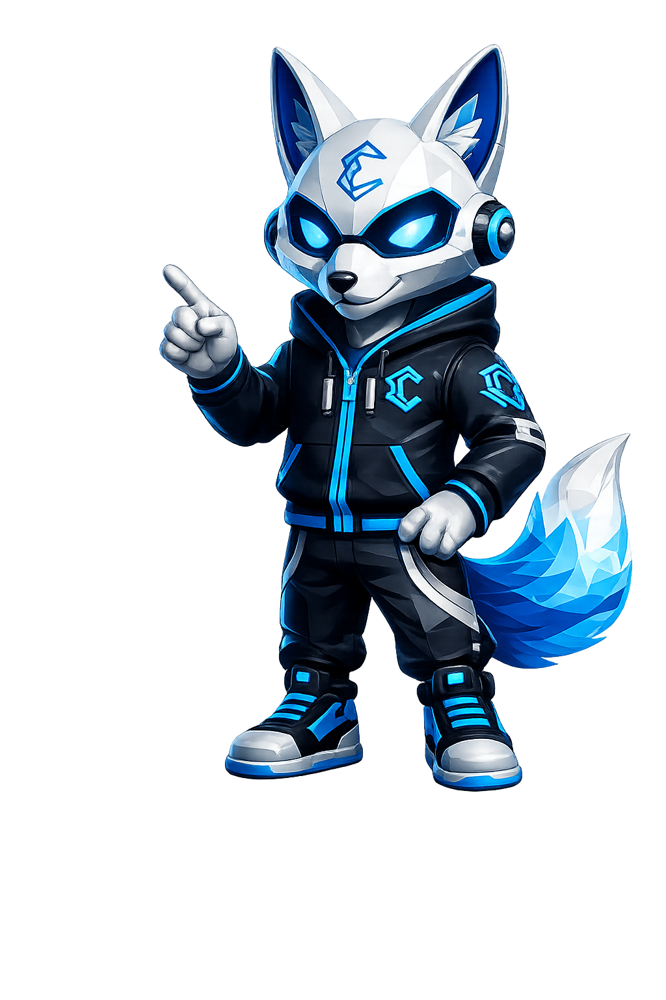

Zenix te guía a través de las 6 plataformas más poderosas del mercado. Aprende a operar cripto, forex y más desde cero hasta nivel profesional.

El exchange de criptomonedas más grande del mundo por volumen de operaciones.

Binance es el punto de entrada ideal para cualquier trader. Su interfaz simple para principiantes y avanzada para profesionales la convierte en la plataforma más versátil del mercado. Con soporte en español, app móvil y las comisiones más bajas, es la primera que debes aprender.
Aprende a crear tu cuenta, verificarla, depositar fondos y hacer tu primera compra de Bitcoin en Binance paso a paso con Zenix.
Acceso a cientos de altcoins con bajas comisiones y sin KYC obligatorio.
KuCoin es perfecta para quienes quieren explorar altcoins antes de que lleguen a Binance. Su política sin KYC obligatorio la hace accesible desde el primer día, y su programa de futuros y bots de trading la convierten en una herramienta poderosa para traders intermedios.
Registro, depósito, trading spot y cómo aprovechar los bots de KuCoin para automatizar tus operaciones.
La plataforma líder en trading de futuros y derivados cripto.

Bybit es la plataforma preferida de los traders de futuros. Su interfaz profesional, velocidad de ejecución y herramientas avanzadas la hacen ideal para quienes ya tienen experiencia en spot y quieren dar el siguiente paso con derivados y apalancamiento.
Aprende a configurar tu cuenta en Bybit, entender los contratos de futuros, gestionar el riesgo y operar con apalancamiento de forma responsable.
Plataforma líder en opciones binarias, CFDs y trading de acciones digitales.
IQ Option destaca por su cuenta demo gratuita de $10,000 virtuales, perfecta para practicar sin riesgo. Es ideal para quienes empiezan en opciones binarias y CFDs. Su app móvil es una de las mejores del sector y el depósito mínimo de $10 la hace muy accesible.

Desde la cuenta demo hasta tu primera operación real. Aprende estrategias básicas de opciones binarias y cómo gestionar el riesgo correctamente.
Broker regulado de Forex y CFDs con spreads ultra bajos y acceso global.
Vantage es un broker regulado ideal para traders de Forex que buscan spreads competitivos y acceso a mercados globales. Con más de 500 instrumentos incluyendo divisas, materias primas, índices y acciones, es la plataforma más completa para diversificar tu portafolio.
Aprende a abrir tu cuenta en Vantage, conectar MetaTrader, operar pares de divisas y aprovechar los spreads más bajos del mercado.
Únete a la comunidad Eprocash Academy y recibe señales, análisis y soporte en tiempo real.

Para principiantes recomiendo Binance por su interfaz simple y soporte en español. Si quieres practicar sin riesgo, IQ Option tiene una cuenta demo gratuita de $10,000 virtuales.
El apalancamiento amplifica tanto ganancias como pérdidas. Solo úsalo cuando tengas experiencia sólida en trading spot. Siempre usa stop loss y nunca arriesgues más del 1-2% de tu capital por operación.
En spot compras el activo real. En futuros operas contratos sobre el precio futuro del activo con apalancamiento. Spot es para principiantes, futuros para traders con experiencia.
Con IQ Option puedes empezar con $10. En Binance no hay mínimo real en spot. Lo importante no es cuánto dinero tienes sino cuánto conocimiento tienes antes de invertir.
Sí, ambas plataformas ofrecen tarjetas asociadas a tu cuenta de trading. Puedes solicitarlas usando los links de la sección de cada plataforma en esta página.
Forex es el mercado de divisas, el más grande del mundo con $7 billones diarios. Operas pares de monedas como EUR/USD. Vantage es ideal para este tipo de trading con spreads muy bajos.